Customers are not enough
Earlier lectures covered how to develop and test ideas for products and services while keeping potential customers in mind. History has examples of innovative products that customers welcomed and that failed anyway. Entrepreneurs who know how to give customers a high performance product often neglect the partners they need to complete the solution.
This lecture is about those partners: how to align them around your company so that the innovation succeeds.

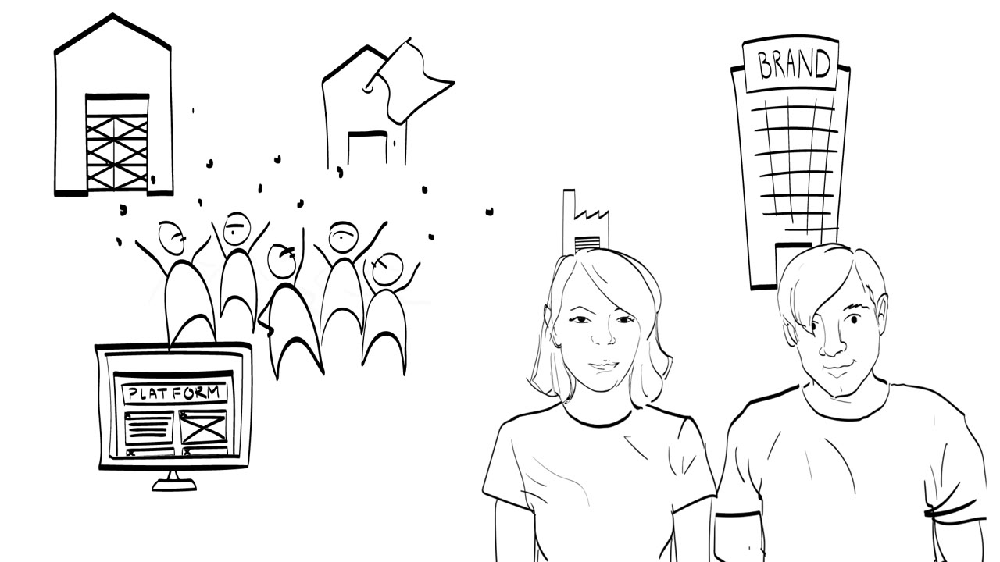
Sony Reader: a good device with little to read
In 2004 Sony was the first to launch a complete e-reader device. It had a lot going for it. The brand was well known. Sony had a partnership with the company that invented the passive e-ink technology behind the e-reader, and it had large in-house resources. In functionality the product was remarkable. With the Sony name on it, getting the readers stocked in electronics stores was no problem either.
What was missing was content. People who bought an e-reader also needed convenient access to a large variety of digital books, and arranging that was hard for Sony.

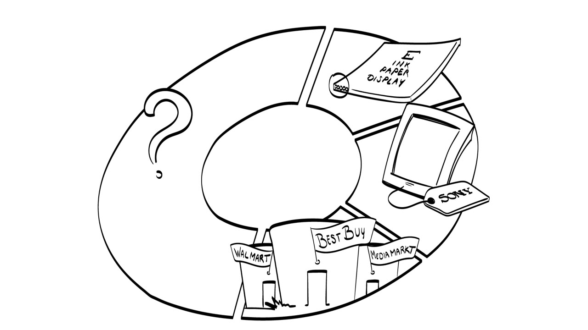
Books are controlled to some extent by authors and even more by their publishers. Convincing publishers to digitise their books was very difficult, for at least two reasons.
- Publishers worried that e-books would change how their business works. How would e-books be priced? Would the publisher earn less than on physical books? How would intellectual rights be managed?
- Perhaps more importantly, Sony could not guarantee that digitised books would not be pirated. A book first had to be downloaded and then placed on the reader through a computer. Publishers feared it could be printed or shared between many users.

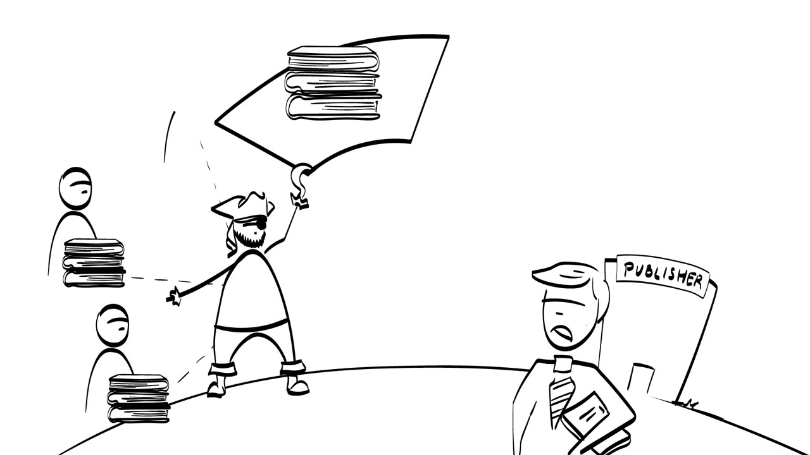
The traditional publishing industry was not ready for a radical shift to digital books, so it stayed with printed volumes. Sony launched with only 10,000 books available for purchase and could not grow that pool by much. The reader itself was great. The lack of an overall experience made it a failure.
Kindle: a weaker device, sold as a service
Amazon came along with the Kindle in 2007. It was an inferior product, and even three years later it had fewer functionalities. But Amazon launched it as a service that gave customers a convenient reading experience, and not as a device.

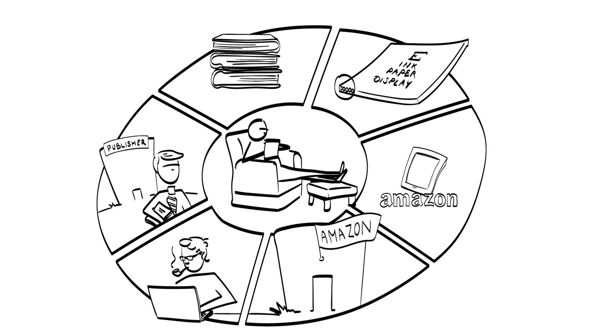
Amazon understood that all its partners had to be happy to play along. It did three things.
- Amazon e-books downloaded directly to the Kindle, so they could not be printed or passed on to other users.
- Publishers received the same royalties they would get from physical book sales.
- Customers were drawn to the device because digital books were sold significantly cheaper than physical ones. To support adoption, Amazon subsidised the losses on book margins from the sales margin of the Kindle device.
The pool of books was extended to over 300,000 shortly afterwards. The Kindle value proposition rested on a well-balanced system of components in which the providers of those components were well taken care of.

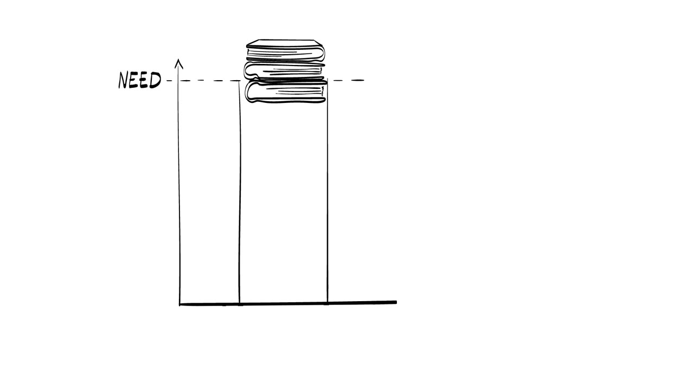

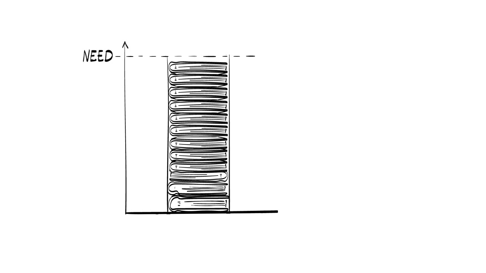
Other organisations can make or break you
The lesson from the two e-readers: the success of an individual innovation almost always depends on complements that come from other organisations. How those organisations act can make or break the innovation, and it is the innovator's job to make sure they play along.
So a large part of launching an innovative product or service is asking two questions. Who are the critical other organisations? And what can we do to pull them along in support of our innovation?
The tool for answering them is the ecosystem pie model, or EPM. The course toolbox has several examples and a tutorial that introduces it in more detail.

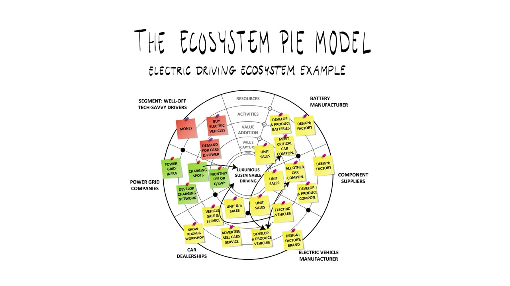
Electricity stored as formic acid
The worked example is a simplified case from Eindhoven University of Technology. Scientists there invented a new concept for storing electricity as formic acid, the liquid that ants emit to irritate our skin.
When excess renewable electricity is generated, it is stored as liquid fuel and not in batteries. That makes transporting and storing the excess quite convenient. When there is demand for power, a special kind of reactor converts the formic acid back into electricity. The technology is environmentally highly sustainable, because the overall process emits no greenhouse gases.

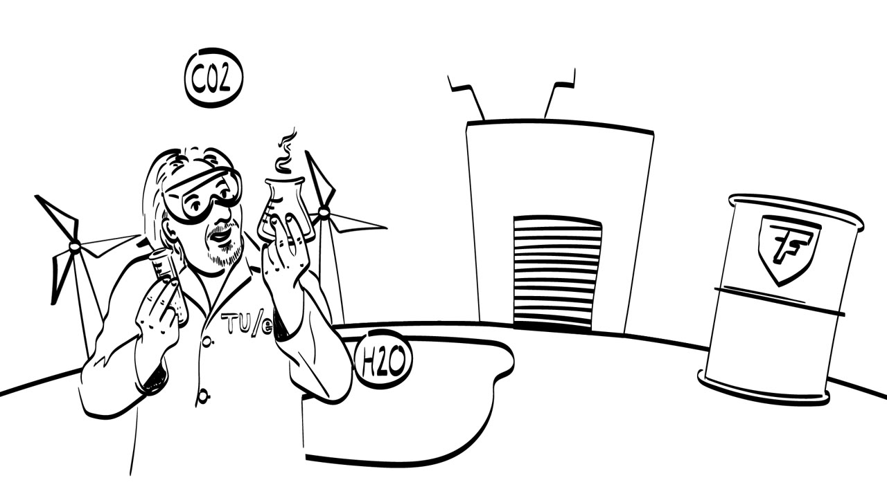

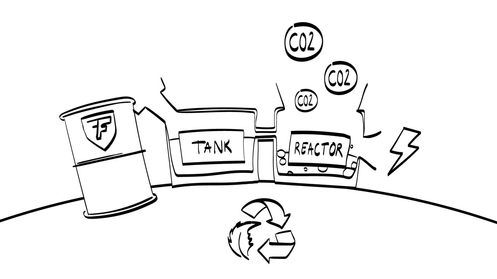
A market that already works without you
The open question is how to bring the technology to the market. The technology team at the university, called Team FAST, decided to aim for public transportation.
There is one big hurdle, and it is typical for many new technologies. A public transportation system already exists and operates quite well without this innovation. To see how the new technology could get adopted, the lecture first lists the actors who make public transportation happen today.

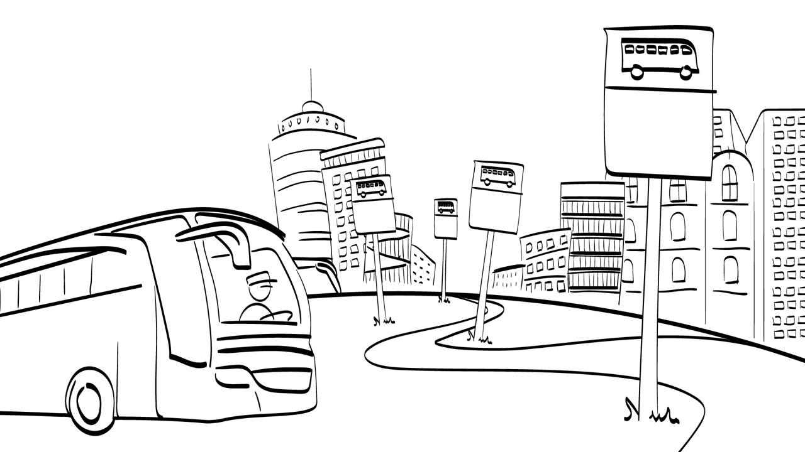
- Citizens demand a public transportation service.
- Led by that demand, municipalities organise competitions between transportation operators to offer the service in a certain area.
- Transportation operators need vehicles to run their bus lines, so they look for good offers from manufacturers.
- Bus manufacturers supply the buses.
- The operator also needs an affordable source of fuel for the fleet. In most cases that is currently diesel.

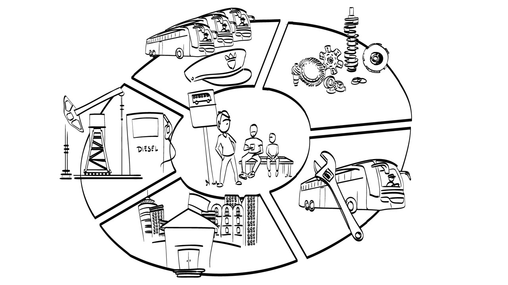
Who would have to change
Now assume the system ran on formic acid and not on fossil fuels like gasoline or diesel. Three things in the current system would have to change.
- Bus manufacturers need to adopt a new power drive in their vehicles.
- The buses would run on formic acid, so petrol stations need to start offering it.
- The fuel has to come from somewhere. A chemical factory needs to find it attractive to produce large quantities of formic acid using renewable energy.

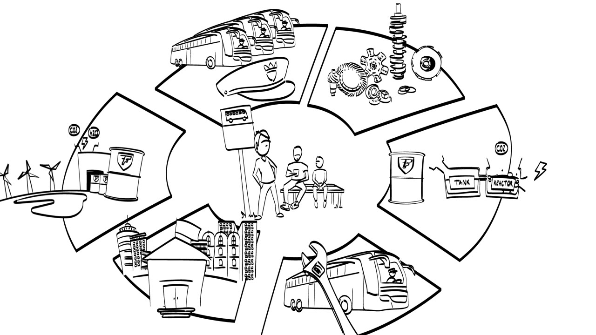
So several parties need to change their activities quite significantly. By default none of them is keen to change its behaviour without a good motivation. If Team FAST wants formic acid transportation to become real, it has to create that motivation for several other actors.
A strategy that starts at the municipality
The lecture gives one strategy that could do this. The initial order for public transportation comes from the municipality. If the municipality demanded environmentally highly sustainable approaches in its tender, bus operators would have an incentive to acquire low emission buses. Demand from bus operators would in turn signal to bus manufacturers that fossil fuel engines need to be replaced with something else.

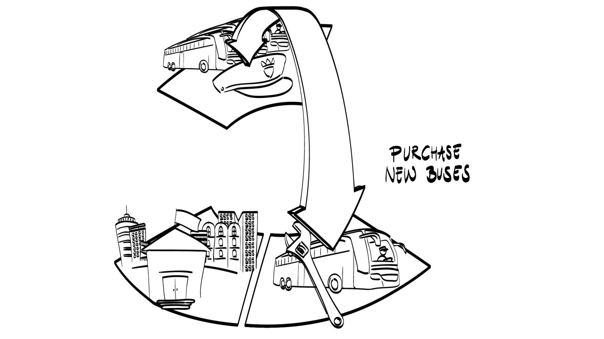
Formic acid is not the only way to power buses more sustainably. Biogas, batteries and supercapacitors are alternatives. But the formic acid approach would compete with fewer alternatives than before.
The burden on petrol stations is also smaller in this application. Public transportation usually revolves around a few central stations, so one or two stations in a city offering formic acid would be enough. Regular passenger cars or trucks are different, because they have to be able to drive long distances in any direction.

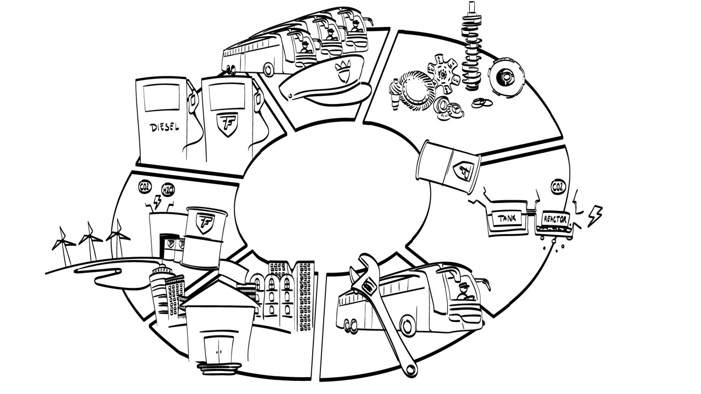
Problems remain, but Team FAST would have a strategy to get the technology adopted. It concentrates on working with municipalities that have sustainability high on their agenda, and on organising bus tendering in a way that helps formic acid mobility get taken up.
Analyse the ecosystem early, and keep doing it
As the technology developer, Team FAST cannot wait and hope that the innovation gets picked up. Convincing only their immediate customer, the bus manufacturer, to build the formic acid solution into its vehicles is not enough either. Under current market circumstances the manufacturer probably would not do it.
The team has to look at the bigger innovation ecosystem. They need to understand how each actor in the current public transportation ecosystem operates, what motivates it, and how to get it to play along with a move to formic acid. Only then can they decide what exactly to do to create widespread support for the technology.
Innovation ecosystem analysis of this kind is a critical step in developing a business case. Whatever you do, your innovation depends on many external parties, and getting them on board is your job. The analysis may also show that ecosystem support is very difficult to create for some innovations. That is a valid argument to delay a project, or to choose an entirely different application for commercialising the technology.
You only find that out if you start analysing the innovation ecosystem as early in the development project as possible and continue throughout the process of bringing the technology to market. The ecosystem pie model is the decision support tool for this kind of strategy, and a guidelines document on the course toolbox explains how to use it.

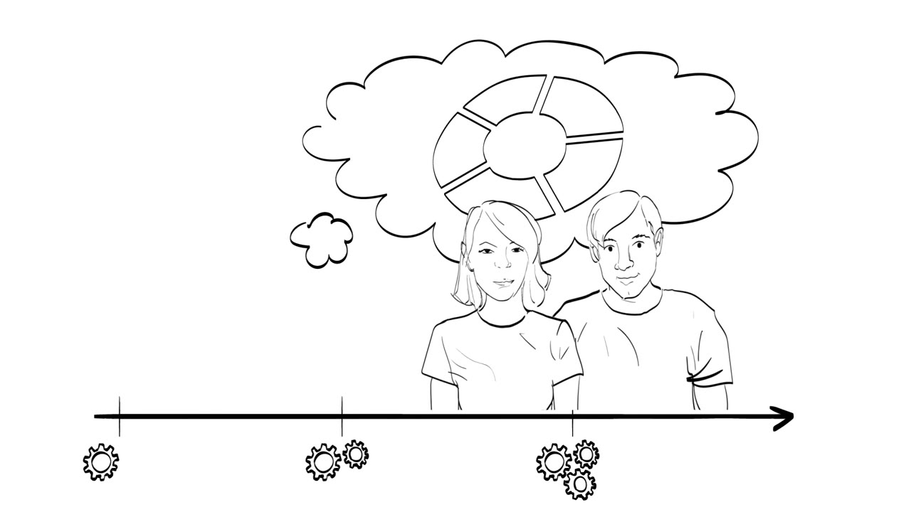
The closing card credits the examples to "The Wide Lens" by Ron Adner and to Team FAST (TU/e).
Terms to know
- Complements
- The parts of a solution that come from other organisations. The success of an individual innovation almost always depends on them. For an e-reader, the books are a complement.
- Innovation ecosystem
- The external parties an innovation depends on, each with its own way of operating and its own motivation.
- Innovation ecosystem analysis
- Working out who the critical other organisations are, how each one operates, what motivates it, and how to get it to play along. Start as early as possible and continue until the technology is on the market.
- Ecosystem pie model (EPM)
- The course's decision support tool for strategy aimed at the innovation ecosystem. It draws the ecosystem as a pie with one slice per actor.
- Tender
- The competition a municipality organises between transportation operators to offer the service in an area. What the tender demands shapes what operators buy.